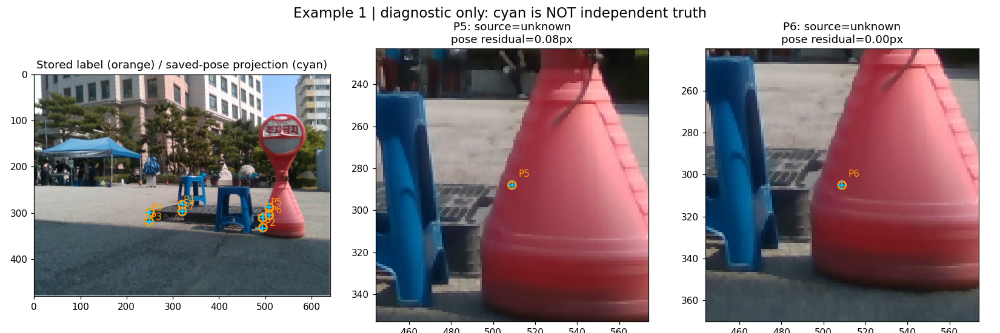
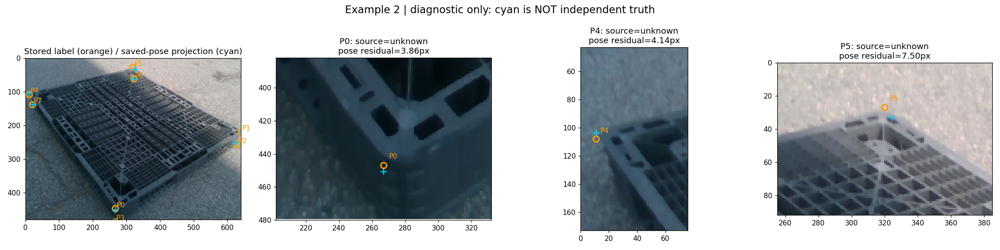
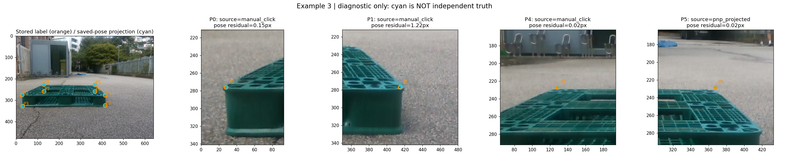

주황 원은 기존 저장 좌표, 하늘색 +는 저장된 자세와 치수로 투영한 점입니다. 하늘색을 더 정확한 정답으로 제안하는 것이 아닙니다. 이 화면은 설명용이며 입력·저장·GT 수정 기능이 없습니다. 이미지를 클릭하면 원래 크기로 볼 수 있습니다.
P5/P6가 빨간 장애물 뒤에 있습니다. 두 표시가 일치해도 좌표가 실제로 맞다는 독립 증거는 아닙니다.

P0/P4/P5 차이는 3.86/4.14/7.50px입니다. P5는 검토 후보지만 자동 수정하지 않았습니다. 둥근 모서리, 클릭 차이, pose 적합 오차 중 원인을 이 차이만으로 분리할 수 없습니다.

P0/P1/P4는 manual_click, P5는 pnp_projected로 기록돼 있습니다. 이 네 점 모두 manual_kps 필드에도 저장돼 있어 필드 이름만으로 출처를 판단하면 안 됩니다.
